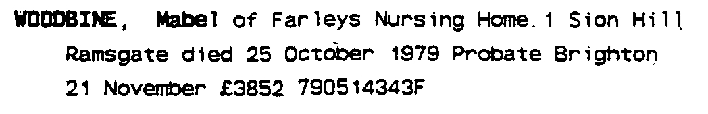
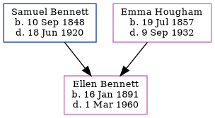

Mabel H Woodbine (née Bennett) 1888 - 1979
[ Home ] | [ Calendar ] | [ Surnames Index ] | [ Census Index ] | [ Family History ]A poultry farmer and the 4th of 5 children of Samuel Bennett (a farm servant) and Emma Hougham, Mabel Bennett, the first cousin three-times-removed on the mother's side of Nigel Horne, was born in Bekesbourne, Kent, England on Sep 13, 18881,2. She married Frederick Woodbine (a signalman with the southern railroad) in Dover, Kent, England on Sep 2, 19163.
During her life, she was living at Station Road in Bekesbourne on Apr 5, 18914; at Netherton, Sibertswold, Kent on Mar 31, 19015; at 2 Israel Cottages, Wadhurst, East Sussex, England on Sep 29, 19391; and at Farleys Nursing Home, 1 Sion Hill, Ramsgate, Kent in 1979.
She died on Oct 25, 1979 in Thanet, Kent, England2.
Parents
- Samuel was born on Sep 10, 1848
- Emma was born on Jul 19, 1857
Citations
- 1939 Register - Findmypast (was the wife of the head of the household)
- England & Wales deaths 1837-2007 - Findmypast
- England & Wales marriages 1837-2008 - Findmypast
- 1891 England, Wales & Scotland Census - Findmypast (was age 2 and the daughter of the head of the household)
- 1901 England, Wales & Scotland Census - Findmypast (was age 12 and the daughter of the head of the household)
Media
Mabel Bennett - probate

England & Wales births 1837-2006 - BMD/B/1888/4/AZ/000045/136
1891 England, Wales & Scotland Census - GBC/1891/0005727010
1901 England, Wales & Scotland Census Transcription - GBC-1901-0005528266
England & Wales deaths 1837-2007 - BMD/D/1979/4/AZ/001257/078
England & Wales marriages 1837-2008 - BMD/M/1916/3/AZ/000074/137
Kent Banns - GBPRS/M/85008449/2
1939 Register Transcription - TNA-R39-2561-2561A-011-18
1939 Register - TNA/R39/2561/2561A/011/19
Kent marriages and banns - GBPRS/M/84187899/2
Family Tree
Generated by ged2site. Last updated on Jun 11, 2024